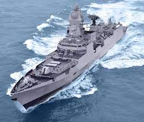

S400 Surface To Air Surface Missle Defence System
.jpeg)
Development
The development of the S-400 system began in the late 1980s and the Russian Air Force announced the system in January 1993. On February 12, 1999 successful tests were reported at Kapustin Yar in Astrakhan, and the S-400 was scheduled for deployment by the Russian army in 2001. Dr Alexander Lemanskiy of Almaz-Antey was the Chief Engineer on the S-400 project.
In 2003, it became apparent that the system was not ready for deployment. In August, two high-ranking military officials expressed concern that the S-400 was being tested with "obsolete" interceptors from the S-300P system and concluded that it was not ready for deployment.[8] The completion of the project was announced in February 2004, and in April, a ballistic missile was successfully intercepted in a test of the upgraded 48N6DM missile.[9][10] In 2007, the system was approved for service.[11] Russia has accepted for service the 40N6 long-range missile for the S-400 air-defence system, a source in the domestic defense industry told TASS news agency in October 2018.[12]
The S-400 Triumf and Pantsir missile system can be integrated into a two-layer defense system.[13][14]
Structure
Command Centre PBU 55K6E
S-400 missile systems are organized around the 30K6E administration system, which can coordinate eight divisions (battalions).[15][16][17] The 55K6E is a command and control center based on the Ural-532301. The 91N6E[18] is a panoramic radar detection system with a 600-kilometre (370 mi) range and protection against jamming, and is mounted on an MZKT-7930.[citation needed] Six battalions of 98ZH6E surface-to-air missile systems (an independent combat system)[19] can track no more than six targets on their own,[20] with an additional two battalions if they are within a 40-kilometre (25 mi) range. The 92N6E (or 92N2E) is a multi-functional radar with a 400-kilometre (250 mi) range, which can track 100 targets.[21] The 5P85TE2 launcher and the 5P85SE2 on a trailer (up to 12 launchers) are used for launch. The 48N6E, 48N6E2, 48N6E3, 48N6DM, 9M96E, 9M96E2, and the ultra-long-range 40N6E missiles have been authorised by a Russian presidential decree.[22] According to the Russian government, the S-400[specify] utilizes an active electronically scanned array.[23]
Truck-mounted radar
S-400 92N2 radar and 5P85T2
Optional elements of the S-400 (98ZH6E)[19][24] include the 15I6ME–98ZH6E, which extends coverage 30, 60 and 90 km (19, 38 and 57 mi) from that provided by the 30K6E. The 96L6E[25] has a 300-kilometre (190 mi) detection range. The 40B6M is housing for the 92N6E or 96L6E radar. The Protivnik-GE is an anti-stealth UHF radar with a 400-kilometre (250 mi) range.[26] The Moscow-1 passive sensor is 2+1⁄2 times more effective than the Protivnik, with a 400-kilometre (250 mi) range[27] Orion[28] for a target-designation on-the-air defense system, and the Avtobaza-M[29] and Orion+ Avtobaza add high-precision detection. The 1RL220BE[19][30] versions were reportedly used for jamming.[31] The 400-kilometre (250 mi)-range S-200D Dubna (SA-5c) missiles and S-300 P-family radar systems can be used without additional command-and-control centers.[32] S-300 (SA-20A, SA-20B) missiles may also be guided.[33] A-50 and A-50U[15] aircraft provide early warning and command-and-control target designation.[34]
The 30К6Е control system can be integrated with the[19] S-400 Triumf 98ZH6E system; the S-300PMU2 (through the 83М6Е2 control system); the S-300PMU1 (through the 83М6Е control system); the Tor-M1 through the Ranzhir-M battery-command post; the Pantsir-S1 through the lead battery vehicle. The Protivnik-GE and Gamma-DE radars, integrated with the 92H6E radar system, enables communication between each battery with Baikal-E senior command posts and similar types; nearby 30К6Е, 83М6Е and 83М6Е2 administration systems; the Polyana-D4М1 command post; fighter-aircraft command post, and mobile long-range radars. The system's VHF component provides sector search-and-tracking, with the X- and L-band components providing fine-tracking capability. Good placement of the radars relative to the threat axis enables the L- and X-band components to illuminate the incoming target from angles where the target radar cross-section (RCS) is sub-optimal. The RLM-S and RLM-D have better elevation-tracking accuracy than the RLM-M, and the Nebo M should be capable of producing high-quality tracks suitable for mid-course guidance of modern surface-to-air missiles and trajectory guidance of legacy SAMs.[35]
The Gamma-C1E SHF mobile radar station has a 300-kilometre (190 mi) detection range.[36] The Nebo VHF mobile radar station and the Resonance-NE radar station have a detection range of 1,200 kilometres (750 mi), and 65 kilometres (40 mi) to a height of 500 metres (1,600 ft). All Nebo-family locators are doubled for army air defense.[37] During the 1970s, the long-range mobile UHF 5H87, and SHF 5H69 low-altitude locators were used.[38][39] A goal of the 1980s was detection at a height of 10 metres (33 ft) at a distance of 40 km (25 mi).[40] The Elbrus-90 computer is used to control the system.[41]
Components
The 91N6E panoramic radar[42] Has a declared anti-stealth targeting range of 150 km (93 mi)[43] Maximum targeting ranges (detection ranges are wider) are:
For a ballistic target (speed of 4800 m/s and a RCS of 0.4 square metres): 230 km
For a target with RCS of 4 square metres: 390 km
For targeting of strategic-bomber sized types: 570 km
96L6 high-altitude radar
The 96L6 high-altitude detector (TSBS)[44][45] radar and equipment operates independently of the 96L6E low-level radar detector. The 96L6E2 export version can track a maximum of 100 targets, and is resistant to false returns of clutter in mountainous terrain. It can perform the functions of a command post for battalions of S-300 (SA20/20A/20B)[46] or S-400. 96L6-1[47] of S-400 and S-500. It serves as the command post for the battalions.[46]
Command Center PBU 55K6E[48] The maximum distance between the command center and the battalion of 98ZH6E with the use of re-transmitters is 100 km (62 mi).
92N6A radar for S-400
Missiles are launched from 5P85TE2 self-propelled launchers or 5P85SE2 trailer launchers operating in conjunction with a BAZ-64022 or MAZ-543M tractor-trailer. A new type of transporter was introduced in 2014 to improve mobility while reducing fuel consumption. The cost of transporters in 2014 is 8.7 million rubles.[49]
Missiles
One system comprising up to eight divizion (battalions) can control up to 72 launchers, with a maximum of 384 missiles[50] (including missiles with a range of less than 250 km [160 mi].[51][52] A gas system launches missiles from the launch tubes up to 30 metres (98 ft) into the air before rocket motor ignition.[33] In April 2015, a successful test firing of the missile was conducted at an airborne target at a range of 400 km (250 mi);[53][54] transporter erector launchers (TELs) carrying the long-range 40N6 may only be able to hold two missiles instead of the typical four due to their large size.[55] Another test recorded a 9M96 missile using an active radar homing head that reached a height of 56 km.[56] All the missiles are equipped with directed explosion warhead, which increases the probability of complete destruction of targets.[57] In 2016, Russian anti-aircraft missile troops received new guided missiles for S-300 and S-400 defense systems.[58] The anti-aircraft missile system, designed to destroy aircraft, cruise, and ballistic missiles, can also be used against ground targets.[59] The S-400 is able to intercept cruise missiles at a range of about 40 km due to their low-altitude flight paths.[60]
Rafale

Origins
In the mid-1970s, both the French Air Force (Armée de l'Air) and Navy (Marine Nationale) had requirements for a new generation of fighters to replace those in or about to enter service.[3] Because their requirements were similar, and to reduce cost, both departments issued a common request for proposal.[4] In 1975, the French Ministry of Aviation initiated studies for a new aircraft to complement the upcoming and smaller Dassault Mirage 2000, with each aircraft optimised for differing roles.[5]
In 1979, the French company Dassault joined the MBB/BAe "European Collaborative Fighter" project which was renamed the "European Combat Aircraft" (ECA).[6] The French company contributed the aerodynamic layout of a prospective twin-engine, single-seat fighter; however, the project collapsed in 1981 due to differing operational requirements of each partner country.[5] In 1983, the "Future European Fighter Aircraft" (FEFA) programme was initiated, bringing together Italy, Spain, West Germany, France and the United Kingdom to jointly develop a new fighter, although the latter three had their own aircraft developments.[7]
A number of factors led to the eventual split between France and the other four countries. Around 1984 France reiterated its requirement for a carrier-capable version and demanded a leading role. It also insisted on a swing-role fighter that was lighter than the design favoured by the other four nations. West Germany, the UK and Italy opted out and established a new European Fighter Aircraft (EFA) programme.[3][N 1] In Turin on 2 August 1985, West Germany, the UK and Italy agreed to go ahead with the EFA, and confirmed that France, along with Spain, had chosen not to proceed as a member of the project.[9][10] Despite pressure from France, Spain rejoined the Eurofighter project in early September 1985. The four-nation project eventually resulted in the development of the Eurofighter Typhoon.[11]
Design phase and prototype
In France, the government proceeded with its own programme. The French Ministry of Defence required an aircraft capable of air-to-air and air-to-ground, all-day and adverse weather operations. Unlike other contemporary European fighter projects that required some level of international collaboration and cost-sharing, France was the sole developer of the Rafale's airframe, avionics, propulsion system and armament, and as such the aircraft was to replace a multitude of aircraft in the French Armed Forces. The Rafale would perform roles previously filled by an assortment of specialised platforms, including the Jaguar, Mirage F1C/CR/CT, Mirage 2000C/-5/N in the French Air Force, and the F-8P Crusader, Étendard IVP/M and Super Étendard in French Naval Aviation.[3][12]
During October–December 1978, prior to France's joining of the ECA, Dassault received contracts for the development of project ACT 92 (Avion de Combat Tactique, meaning "Tactical Combat Airplane"). The following year, the National Office for Aviation Studies and Research began studying the possible configurations of the new fighter under the codename Rapace (meaning "Bird of Prey"). By March 1980, the number of configurations had been narrowed down to four, two of which had a combination of canards, delta wings and a single vertical tail-fin.[5] In October 1982, the French Ministry of Defence announced that Dassault would build a technology demonstrator named Avion de Combat expérimental (Experimental Combat Airplane, ACX). France wanted to collaborate with West Germany and the UK on the project, but was prepared to build the ACX by itself. In 1984, the government decided to proceed with a combat variant of the ACX due to the conflicting technical criteria of the respective FEFA participant nations.[5][13]
Side view of white jet aircraft parked with other aircraft in the background
The Dassault "Rafale A" technology demonstrator in 2006
The resultant Rafale A technology demonstrator was a large-delta winged fighter, with all-moving canards, embodying fly-by-wire (FBW) flight control system.[3] Construction of the demonstrator commenced in March 1984, even before a contract was signed with the DGA, France's defence procurement agency.[5] The technology demonstrator was rolled out in December 1985 in Saint-Cloud, and took its maiden flight on 4 July 1986 from Istres-Le Tubé Air Base in southern France.[3] During the one-hour flight, the project's chief test pilot Guy Mitaux-Maurouard took the aircraft to an altitude of 11,000 metres (36,000 ft) and a speed of Mach 1.3. The 9.5-tonne (21,000 lb) demonstrator stopped in 300 metres (980 ft) upon landing.[14]
Throughout the flight test programme, the Rafale A performed numerous day and night take-offs and landings aboard the carriers Clemenceau and Foch to investigate the pilot's field of view during carrier operations. It reached a speed of Mach 2 (2,450 km/h; 1,520 mph; 1,320 kn) and a height of 13,000 metres (42,000 ft).[15] The demonstrator was initially powered by General Electric F404-GE-400 afterburning turbofans from the F/A-18 Hornet, instead of the Snecma M88, to reduce the risk that often comes with a first flight, and since the M88 was not considered sufficiently mature for the initial trials programme.[3][16] It was not until May 1990 when the M88 replaced the port F404 in the demonstrator to enable the aircraft to reach Mach 1.4 and demonstrate supercruise, or sustained supersonic flight without use of afterburners. After 865 flights with four pilots, Rafale A was retired in January 1994.[3][15][17]
At the time of the Rafale A's maiden flight, France entered unsuccessful talks with Belgium, Denmark, the Netherlands and Norway about a possible collaboration on the Rafale as a multinational project; at the time, Belgium was reportedly interested in the Rafale B. In June 1987, Prime Minister Jacques Chirac declared that the country would proceed with the US$30 billion project. Subsequently, on 21 April 1988, the French government awarded Dassault a contract for four Rafale prototypes: one Rafale C, two Rafale Ms and one Rafale B. The first out of an expected 330 Rafales was scheduled to enter service in 1996.[18][19][20][21] However, the fall of the Berlin Wall, which signalled the end of the Cold War, as well as the need to reduce the national deficit, compelled the French government to drastically reduce its defence budget; the 1994 budget for the Rafale programme was cut by US$340 million.[22][23] This reduced the size of the Rafale orders, which Dassault and other companies involved claimed impeded production management and led to higher costs, and delayed the entry of the aircraft into service. The French Air Force was reorganised, the Mirage 5F was completely phased out and a total of 55 Mirage F1Cs were upgraded to a tactical fighter configuration, redesignated as Mirage F1CT. The budget cuts prolonged the Rafale's development considerably.[3][24][25]
Rafale logo
During the Rafale A flight test programme, the French government in 1989 looked at the F/A-18 Hornet as a potential replacement for the rapidly aging F-8 Crusader, which had been serving since the 1950s. The French Navy entered purchase of second-hand F/A-18s with Australia, Canada and the US, after the decision was made not to upgrade the Crusaders. The US Navy agreed to supply two F/A-18s to the French Navy for "interoperability testing" aboard the French aircraft carrier Foch. The French government did not proceed with a purchase of the twin-engine fighter.[26][27]
Testing
A Rafale during aerial refueling
To meet the various roles expected of the new aircraft, the Air Force required two variants: the single-seat "Rafale C" (chasseur, meaning "fighter" or literally "hunter") and the "Rafale B" (biplace, or two-seater). The prototype of the C model (designated C01) completed its first flight on 19 May 1991, signalling the start of a test programme which primarily aimed to test the M88-2 engines, man-machine interface and weapons, and expand the flight envelope.[28] Due to budget constraints, the second single-seat prototype was never built.[29]
The C01 differed significantly from the Rafale A. Although superficially identical to the technology demonstrator, it was smaller and more stealthy due to the gold-coated canopy, a re-design of the fuselage-fin joint, and the addition of radar-absorbent materials (RAM). This aircraft also saw extensive application of composite and other materials, which both reduced the radar cross-section (RCS) and weight. Moreover, Dassault opted to reject variable engine inlets and a dedicated air brake, which lessens maintenance loads and saves weight.[30] The B01, the only prototype of the two-seat B variant, made its maiden flight on 30 April 1993.[28] It was 350 kilograms (770 lb) heavier than the single-seater, but carried 400 litres (110 US gal) less fuel. The aircraft was used for weapon-systems testing. Later it was tasked with validating weapon separation and, specifically, the carriage of heavy loads. The aircraft's typical loadout consisted of two 2,000-litre (530 US gal) external tanks, two Apache/Scalp cruise missiles, in addition to four air-to-air missiles.[31]
A French Navy Rafale M landing aboard USS George H.W. Bush
The Navy, meanwhile, sought a carrier-based aircraft to supersede its fleet of ageing Étendard IV Ms & Ps, F-8P Crusaders and Super Étendard Modernisés. While the Navy initially modernised the Crusaders, in the long-term, the requirement was met with the navalised Rafale M. The M01, the naval prototype, first flew on 12 December 1991, followed by the second on 8 November 1993.[28][32] Since France had no land-based catapult test facility, catapult trials were initially carried out between during July–August 1992 and early the following year, at NAS Lakehurst in New Jersey. The aircraft then carried out trials aboard the carrier Foch in April 1993. Flown by Dassault's chief test pilot, Yves Kerhervé, M02 made its maiden flight in November that year, while the first prototype completed the third round of testing at Lakehurst in November and December 1993.[33]
Production and upgrades
Initially, the Rafale B was to be just a trainer, but the Gulf War showed that a second crew member was invaluable on strike and reconnaissance missions. Therefore, in 1991 the Air Force switched its preferences towards the two-seater, announcing that the variant would constitute 60 percent of the Rafale fleet.[34] The service originally envisaged taking delivery of 250 Rafales, but this was initially revised downwards to 234 aircraft, made up of 95 "A" and 139 "B" models",[32][35] and later to 212 aircraft.[34] The Navy, meanwhile, had 60 Rafales on order, down from 86 due to budget cuts.[32][34] Of the 60, 25 would be M single-seaters and 35 two-seat Ns,[35] though the two-seater was later cancelled.[15]
Production of the first aircraft series formally started in December 1992, but was suspended in November 1995 due to political and economic uncertainty. Production only resumed in January 1997 after the Ministry of Defence and Dassault agreed on a 48-aircraft (28 firm and 20 options) production run with delivery between 2002 and 2007.[34] A further order of 59 F3 Rafales was announced in December 2004.[36] In November 2009 the French government ordered an additional 60 aircraft to take the total order for the French Air Force and Navy to 180.[37]
During the Rafale's design phase, Dassault took advantage of Dassault Systèmes' CATIA (Computer Aided Three-dimensional Interactive Application), a three-dimensional computer-aided design, manufacture and engineering software suite that would become standard across the industry.[38] CATIA enabled digitisation and efficiency improvements throughout the Rafale programme, as it implemented recently developed processes such as digital mockup and product data management. It consisted of 15 GB databases of each of the Rafale's components, assisting with various aspects of the design, manufacture and through-life support.[38]
The Rafale final assembly site is located adjacent to Bordeaux–Mérignac Airport
According to the French magazine L'Usine nouvelle, apart from several non-sensitive components sourced from the United States, the Rafale is manufactured almost entirely in France. Different elements are produced in numerous factories across the country, and final assembly takes place near Bordeaux–Mérignac Airport. For example, the flight control surfaces are fabricated in Haute-Savoie, the wings and avionics in Gironde, the centre fuselage in Val-d'Oise, and the engines in Essonne.[39] Roughly 50 percent of the Rafale is produced by Dassault and the other half divided between two major partners, Thales and Safran, who rely on a network of 500 subcontractors. Altogether, the programme employs 7,000 workers. As of 2012, the fabrication process of each fighter took 24 months, with an annual production rate of eleven aircraft.[39]
Deliveries of the Rafale's naval version were a high priority to replace the Navy's considerably aged F-8 Crusaders, and so the first production model for the French Navy undertook its first flight on 7 July 1999.[40] Their first naval deployment was in 2002 on board Charles de Gaulle; by March 2002, the aircraft carrier was stationed in the Gulf of Oman, where its complement of Rafales undertook training operations.[41] In December 2004, the Air Force received its first three F2 standard Rafale Bs at the Centre d'Expériences Aériennes Militaires (CEAM, i.e. the Military Air Experiment Centre) at Mont-de-Marsan, where they were tasked to undertake operational evaluation and pilot conversion training.[32]
The total programme cost, as of FY2013, was around €45.9 billion,[42] which translated to a unit programme cost of approximately €160.5 million. This figure takes in account improved hardware of the F3 standard, and which includes development costs over a period of 40 years, including inflation.[43] The unit flyaway price as of 2010 was €101.1 million for the F3+ version.[44]
In 2008, French officials were reportedly considering equipping the Rafale to launch miniaturised satellites.[45] In 2011, upgrades under consideration included a software radio and satellite link, a new laser-targeting pod, smaller bombs and enhancements to the aircraft's data-fusion capacity.[46] In July 2012, fleetwide upgrades of the Rafale's battlefield communications and interoperability capabilities commenced.[47][48]
In January 2014, Defence Minister Jean-Yves Le Drian announced that €1 billion is allocated towards the development of the F3R standard. The standard will see the integration of the Meteor BVR missile, among other weapons and software updates. The standard was to be validated by 2018.[49][50][51]
From 26 to 29 April 2021, a first test campaign was carried out by aircraft configured with the new F4-1 standard.[52]
The Rafale is planned to be the French Air Force's primary combat aircraft until 2040 or later,[53] until replacement by the Franco-German New Generation Fighter.
Ins Vishal

In April 2011, Admiral Nirmal Kumar Verma stated that construction of the second carrier was some years away as there were a number of higher spending priorities for the navy.[10] The design stage of IAC-2 began in 2012, and was undertaken by the navy's Naval Design Bureau. The navy decided not to seek outside help in preparing the design concept and implementation plans, but might seek help from the Russian Design Bureau later to integrate Russian aircraft into Vishal. IAC-2 is proposed to be a flat-top carrier with a displacement of 65,000 tonnes and might have a CATOBAR system, unlike the STOBAR system on IAC-1.[2][11][12][13] On 13 May 2015, Defence Acquisition Council (DAC) allotted Rs.30 crore for initial construction planning process of INS Vishal.[14][15]
In May 2015, Chief of the Naval Staff Admiral Robin K. Dhowan initially floated the possibility of nuclear propulsion, saying that "all options are open for the second indigenous aircraft carrier. Nothing has been ruled out."[8] The initial plan for the aircraft carrier included nuclear propulsion system[16] but this was later changed to an integrated electric propulsion system due to the complexities involved in developing a nuclear reactor with a capacity of 500 to 550 megawatts that would possibly take 15 to 20 years.[17][18]
The Indian Navy also reached out to four international defence companies for suggestions with the design of Vishal, with letters of request sent to the British BAE Systems, French DCNS, American Lockheed Martin and Russian Rosoboronexport on 15 July 2015, according to a report in Jane's Navy International.[19] The letter asked the companies to "provide technical and costing proposals" for the IAC-2 program.[19]
In 2013, the Indian Navy reportedly sought to equip the aircraft carrier with EMALS, which could enable the launching of larger aircraft as well as unmanned combat aerial vehicles.[20] General Atomics, the developer of EMALS, also gave a briefing of the technology to Indian Navy officers with the permission of the US Government.[9] In April 2015, US Under Secretary of Defense for Acquisition and Sustainment Frank Kendall stated that the Obama administration was supportive of selling EMALS to India, amongst other technologies.[21] A Joint Working Group on Aircraft Carrier Cooperation was also formed between India and the United States to collaborate on the design and development of aircraft carriers, with the first meeting between Indian Navy and United States Navy naval officers held in August 2015.[22] In October 2017, just ahead of US Secretary of State Rex Tillerson's visit to India, the Trump administration approved the release of technology for the EMALS for Vishal.[23]
On 3 December 2018, Chief of the Naval Staff Sunil Lanba told media that the work on Vishal had moved ahead and the construction of the ship is expected to begin in 3 years.[24][25] Initially, the carrier was expected to enter service by the 2020s,[9][26] but the expected date of completion was later postponed to the 2030s.[27]
British newspaper Daily Mirror reported on 5 May 2019 that India was in talks with the United Kingdom to purchase the detailed plans for HMS Queen Elizabeth to use as the basis of INS Vishal's design.[28][29]
In April 2021, Hindustan Times reported that with the Indian Navy, deciding to give preference to nuclear powered and conventional submarines in future sea-warfare, will now see the third aircraft carrier, INS Vishal as a replacement for the serving INS Vikramaditya.[30]
Carrier Air Wing Organization
It's estimated that the Carrier air wing of INS Vishal could consist of carrier-based HAL TEDBF and naval version of HAL AMCA. There's also a high possibility of operating Mikoyan MiG-29Ks and other carrier-based aircraft at the initial stage of INS Vishal. Naval planners believe that with INS Vishal likely to enter service in the early 2030s, they should plan on operating UCAVs from that carrier, as well as a fixed wing ASW and AEW&C aircraft as well as medium and light fighters. According to a naval planner, it "could greatly expand our mission envelope with UCAVs, using the pilot-less aircraft for high-risk reconnaissance and suppression of enemy air defences (SEAD). Mid-air refuelling would let us keep UCAVs on a mission for 24–36 hours continuously, since pilot fatigue would not be a factor."[9]
Ins Vishakapatnam
INS Visakhapatnam is the first ship of the Visakhapatnam-class stealth guided-missile destroyers of the Indian Navy. The ship was commissioned on 21 November 2021 at the Naval dockyard in Mumbai by the Defence Minister of India Rajnath Singh[21]
Construction
INS Visakhapatnam while launch
The keel of Visakhapatnam was laid down on 12 October 2013 and she was launched on 20 April 2015 at Mazagon Dock Limited of Mumbai.[22][23][24]. This was made under Make In India initiative. The ship steering and stabiliser system was manufactured by Larsen & Toubro and hydraulics by Polyhydron Systems. All indigenous manufactured parts are fitted in to ship.
On 21 June 2019, a fire that started in the air conditioning room of INS Visakhapatanam resulted in the death of one contract worker. The damage from the fire was reported to be limited.[25]
During Navy Day 2020, Indian Navy Chief announced that the lead ship of Visakhapatnam class destroyer has started its trials.[26]
The first and the lead ship of the Vishakhapatnam class of destroyers, INS Vishakhapatnam, was received by the Navy on 28 October 2021[27] and commissioned on 21 November 2021 by Defence Minister Rajnath Singh in Mumbai
HAL AMCA
.jpeg)
Development
AMCA Program
Earlier 3B-01 wind tunnel model of AMCA
The AMCA programme, earlier known as Medium Combat Aircraft (MCA) programme, was initiated to develop a twin engine fighter which incorporates stealth features to replace the main strike fighters of IAF viz Mirage 2000 and SEPECAT Jaguar.[17] In 2010, the MCA programme was rechristened as Advanced Medium Combat Aircraft (AMCA) programme and a detailed feasibility study was launched by ADA.[18][19] Although MCA was envisioned as a 15-tonne class fighter, the IAF's Air Staff requirements (ASR) for the AMCA, issued in April 2010 placed the now rechristened aircraft in the 25-tonne category.[20][21][22][23] In October 2010, the Government of India allocated ₹100 crore to prepare feasibility studies in 18 months.[24] In 2013, a review committee was formed, which on the feasibility study report recommended initiating the next phase of the programme.[25]
The Project Definition and Preliminary Design phase of AMCA began in 2013.[26] From November 2013 to December 2014, 9 configurations of AMCA, starting from 3B-01 to 3B-09, were studied using CAD, low speed - high speed wind tunnel testing and radar cross section (RCS) testing and eventually by the end of 2014, configuration 3B-09 was chosen.[27] In 2015, basic design configuration of AMCA was finalized and a detailed AMCA programme report was submitted to the IAF, which after review gave concurrence to the programme.[28][29] The AMCA design after considerable refinements, has been accepted by IAF in 2016.[30] The Project definition phase was completed by 2017.[31][32] On 4 April 2018, Indian Defence Minister Nirmala Sitharaman in a written reply to the Lok Sabha confirmed that the feasibility study for the AMCA programme has been completed and the programme would be completed in two phases viz, technology demonstration phase and full scale engineering development phase.[33] The Detailed Design Phase of AMCA has commenced in 2018, as part of the phase, a full scale model of AMCA will be developed for testing stealth features.[14][34] The ADA is expecting to get government approval for the AMCA programme by the second quarter of 2021.[35] ₹15,000 crore will be sanctioned for the program soon as per the latest reports.[36][37] The first prototype of AMCA is expected to be rolled out by 2025-26.[7]
The current plan is to procure 7 squadrons of AMCA initially, first two squadrons in Mark 1 configuration, equipped with an imported engine and the remaining five squadrons in Mark 2 configuration, equipped with an uprated indigenous engine.[38] The Mark 2 of AMCA would also incorporate sixth generation features and technologies to stay relevant in the coming decades.[39]
In 2015, 700 ADA employees were working on the project along with 2,000 employees of DRDO and 1,000 employees of HAL supported by over 500 employees of subcontractors of both Indian and foreign firms.
Work on various technologies was carried out by multiple establishments of DRDO, ADA and HAL which included stealth, engine, three-dimensional thrust vectoring, AESA radar, internal weapons bay, serpentine air intakes and all other major avionics.[40][41] According to Deputy Air Marshall Sinha "To provide adequate time to Indian industries to develop required capabilities, the armed forces will soon come out with a list of technologies of interest... underlining that these efforts are expected to synergise indigenous development of advanced aerospace systems."[42] In 2015, as part of the Indian MRCA competition, Saab AB made an offer for participating in the AMCA programme.[43]
In 2021, Mishra Dhatu Nigam (MIDHANI) started supplying titanium alloy for airframe construction. Till August 5, 2021 five slabs of titanium alloy were already supplied to Hindustan Aeronautics Limited. The production of the alloy was done through the same technology, first developed by MIDHANI for crew escape system of Gaganyaan programme. HAL is planning to rollout first AMCA Mark 1 from the assembly line by 2027 which will form the first phase of production. From the second phase, integration of sixth generation technologies by DRDO will take place on Mark 2 variant.[10]
In an interview to The Financial Express on 22 October 2021, Air Chief Marshal Vivek Ram Chaudhari confirmed that IAF is looking forward to AMCA aiming at sixth generation technologies.[44] IAF is planning for two squadron of Mark 1 and five squadron of Mark 2 variant. There is also plan for a light combat aircraft variant of AMCA in future.[45] Ongoing consultation happened on November 2021 between IAF, HAL, DRDO, ADA, Ministry of Defence and Ministry of Finance as final design of AMCA prototype is getting ready for approval from Cabinet Committee on Security (CCS).[46]
Design
Overview
The AMCA is a twin-engine, stealth supersonic multi-role fighter designed for the IAF.[47] At present, the AMCA is planned as a fifth generation fighter but will integrate emerging, best of breed sixth generation technologies over time.[48] The AMCA would be the first fifth generation fighter to enter service with the Indian Air Force.[49][50]
The AMCA is designed with shoulder mounted diamond shaped trapezoidal wings, a profile with substantial area-ruling to reduce drag at transonic speeds, and a stabilator V-tail with large fuselage mounted Tail-wing.[21] Flight control surfaces include leading and trailing-edge flaps, ailerons, rudders on the canted vertical stabilizers, and all-moving tailplanes; these surfaces also serve as Air brakes. The cockpit features a single seat configuration which is placed high, near the air intakes and wings of the aircraft to provide good visibility to the pilot with a single bubble canopy.[21] A leading-edge root extension (LERX), which is a small fillet, is situated on the front section of the intake and wings of the aircraft. It has a typically roughly rectangular shape, running forward from the leading edge of the wing root to a point along the fuselage.[21] The aircraft features a tricycle landing gear configuration. The weapons bay is placed on the underside of the fuselage between the nose and main landing gear. The AMCA is designed to produce a very small radar cross-section, to accomplish this it features “S-shaped” air-intakes to reduce radar exposure to the fan blade which increases stealth, uses an internal weapons bay and features the use of composites and other materials.[21] The flight control surfaces are controlled by a central management computer system. The AMCA will have some sixth generation characteristics such as an optionally manned, directed energy weapons, capable of controlling UCAVs and swarm drones.[51][52][53]
Stealth and radar signature
The AMCA design has inherent radar stealth, achieved through platform edge alignment and serration, body conformal antenna and low intercept radar, Diverterless supersonic inlet (DSI) with serpentine ducts which conceal engine fan blades, internal weapons bay and extensive use of composites in airframe.[54]
Sensors and avionics
The AMCA is expected to have distributed passive sensors with Artificial intelligence (AI) assisted multi-sensor data fusion to increase situational awareness and to work in tandem with the advanced electronic warfare (EW) suite onboard AMCA.[55][56] The AMCA has a distributed processing system employing fast processors and smart subsystems.[57] The AMCA will also have an integrated vehicle health monitoring system which works on sensor fusion.[58]
AMCA will be equipped with a larger and powerful variant of the Uttam AESA Radar which will use gallium nitride (GaN) technology.[59][60][61] It will be mounted on a mechanically steerable mount.[21] An onboard condition monitoring system is also planned to be included in the AMCA.[62]
Cockpit
The AMCA will have a glass cockpit equipped with a wide panoramic touchscreen display for enhanced man-machine interaction, a multi function display (MFD) placed in portrait orientation and a wide-angle holographic head-up display HUD. The AMCA will have hands-on throttle-and-stick (HOTAS) arrangement with right hand on stick and left hand on throttle settings to ease the pilot workload.[63][64]
Propulsion
The AMCA is to be powered by two afterburning turbofan engines mounted side-by-side in the fuselage, fed by Diverterless supersonic inlets (DSI). The initial plan was to equip an uprated Kaveri engine developed for Tejas, but Kaveri engine programme was shelved due to sub-optimal performance.[65] The AMCA Mark 1 will be powered by GE F414 afterburning turbofan engine,[66] while AMCA Mark 2 would be powered by either indigenous or joint venture (JV) engine of 110 kN thrust.[67][68] In 2015, ADA held a series of discussions with foreign engine manufacturers exploring the possibility of joint venture.[69][70]
Armament
The AMCA features an internal weapons bay for carrying missiles and standoff precision guided munitions in stealthy configuration, while also has provision for external hardpoints for carrying ordinance externally for non-stealthy missions.[71][72] Directed energy weapons are also planned to be equipped on the AMCA.[73]
Ins Vikrant (2013)
.jpeg)
In 1999, Defence Minister George Fernandes authorised the development and construction of an aircraft carrier, 'INS Vikrant', under the Project 71 Air Defence Ship (ADS).[25] By that time, given the ageing Sea Harrier fleet, the letter of intent called for a carrier that would carry more modern jet fighters. In 2001, Cochin Shipyard Limited (CSL) released a graphic illustration showing a 32,000-ton STOBAR (Short Take-Off But Arrested Recovery) design with a pronounced ski jump.[26] The aircraft carrier project finally received formal government approval in January 2003. By then, design updates called for a 37,500-ton carrier to operate the Mikoyan MiG-29K. India opted for a three-carrier fleet consisting of one carrier battle group stationed on each seaboard, and a third carrier held in reserve, in order to continuously protect both its flanks, to protect economic interests and mercantile traffic, and to provide humanitarian platforms in times of disasters, since a carrier can provide a self-generating supply of fresh water, medical assistance or engineering expertise to populations in need for assistance.[27]
In August 2006, Chief of the Naval Staff Admiral Arun Prakash stated that the designation for the vessel had been changed from Air Defence Ship (ADS) to Indigenous Aircraft Carrier (IAC). The euphemistic ADS had been adopted in planning stages to ward off concerns about a naval build-up. Final revisions to the design increased the displacement of the carrier from 37,500 tons to over 40,000 tons. The length of the ship also increased from 252 metres (827 ft) to 262 metres (860 ft).[28]
Design
The indigenous aircraft carrier INS Vikrant is 262 metres (860 ft) long and 62 metres (203 ft) wide, and displaces about 45,000 metric tons (44,000 long tons).[29] It features a STOBAR configuration[30] with a ski-jump. The deck is designed to enable aircraft such as the MiG-29K to operate from the carrier. It is expected to carry an air group of up to thirty aircraft, which will include up to 24–26 fixed-wing combat aircraft,[31] primarily the MiG-29K, besides carrying 10 Kamov Ka-31 or Westland Sea King helicopters. The Ka-31 will fulfill the airborne early warning (AEW) role and the Sea King will provide anti-submarine warfare (ASW) capability.[32][33]
A schematic diagram of INS Vikrant
Vikrant is powered by four General Electric LM2500+ gas turbines on two shafts, generating over 80 megawatts (110,000 hp) of power. The gearboxes for the carriers were designed and supplied by Elecon Engineering.[18][34][35]
The ship's combat management system (CMS) was developed by Tata Power Strategic Engineering Division in collaboration with Weapon and Electronics System Engineering Establishment and MARS, Russia. It is the first CMS developed by a private company for the Indian Navy, and was handed over to the Navy on 28 March 2019.[36][37]
Carrier air group
India considered a number of aircraft for operation from its aircraft carrier, INS Vikramaditya and the planned indigenous aircraft carrier. India evaluated the Russian Sukhoi Su-33, but chose the lighter MiG-29K as Vikramaditya was smaller and lacked an aircraft catapult.[38] On 18 January 2010, it was reported that India and Russia were close to signing a deal for 29 MiG-29K fighters to operate from IAC-1.[39] In addition, the Navy signed a deal for six naval-variants of the indigenous HAL Tejas.[40] In June 2012, Flight Global reported that the Indian Navy was considering the use of the Dassault Rafale M (Naval variant) on these carriers.[41]
In December 2016, the Navy announced that the HAL Tejas was overweight for carrier operations, and other alternatives would be looked at.[42][43] The Navy settled with MiG-29K as the primary aircraft for the IAC-1.[44][45]
In late January 2017, the Indian Navy released an international Request for Information (RFI) for 57 "Multi-Role Carrier Borne Fighters". The main contest was between the Boeing F/A-18E/F Super Hornet and the Dassault Rafale-M. Both these aircraft are operable on the Vikrant and Vikramaditya.[46] In December 2020, Boeing demonstrated F/A-18E/F operations from Indian carriers at the shore-based test facility at Naval Air Station Patuxent River in Maryland, US.[47][48] Number was revised to 36 from 57 in mid 2020.[49]
After the HAL Tejas and the Tejas Mk2 were considered overweight for carrier operations, the Defence Research and Development Organization introduced a program to develop a twin-engine, carrier based, multirole combat aircraft called the HAL Twin Engine Deck Based Fighter (TEDBF) for the Indian Navy. A model of the aircraft was displayed at Aero India 2021. The first flight is expected in 2026 with induction into the forces by 2032. The TEDBF is expected to perform multiple roles like combat air patrol, air-to-air combat, anti-ship strike and buddy refueling.[50] This aircraft has also been envisioned to operate from the INS Vikrant, INS Vikramaditya and the future aircraft carrier INS Vishal.
Construction
Vikrant is the first aircraft carrier to be designed by the Directorate of Naval Design of the Indian Navy and the first warship to be built by Cochin Shipyard. Its construction involved participation of a large number of private and public firms.
The Defence Metallurgical Research Laboratory (DMRL) and Steel Authority of India Limited (SAIL) created facilities to manufacture the DMR 249 grade steel in India.[18][51] Reportedly, 26,000 tonnes of three types of special steel for the hull, flight deck and floor compartments were manufactured at the Bokaro Steel Plant, Jharkhand, Bhilai Steel Plant, Chhattisgarh and Rourkela Steel Plant, Odisha. Due to this, Vikrant is the first ship of the Indian Navy to be built completely using domestically-produced steel.[52] The main switch board, steering gear and water tight hatches have been manufactured by Larsen & Toubro in Mumbai and Talegaon; high-capacity air conditioning and refrigeration systems have been manufactured in Kirloskar Group's plants in Pune; most pumps have been supplied by Best and Crompton; Bharat Heavy Electricals (BHEL) supplied the Integrated Platform Management System (IPMS), which is being installed by Avio, an Italian company; the gear box was supplied by Elecon Engineering; and the electrical cables are being supplied by Nicco Industries.[53] Fincantieri provided consultancy for the propulsion package while Russia's Nevskoye Design Bureau designed the aviation complex.[54]
The keel for Vikrant was laid by Defence Minister A.K. Antony at the Cochin Shipyard on 28 February 2009.[55][56][57] The ship uses modular construction, with 874 blocks joined together for the hull. By the time the keel was laid, 423 blocks weighing over 8,000 tons had been completed.[58] In August 2011, the Defence Ministry reported to the Lok Sabha that 75% of the construction work for the hull of the lead carrier had been completed and the carrier would be first launched in December 2011, following which further works would be completed until commissioning.[59][60] On 29 December 2011, the completed hull of the carrier was first floated out of its dry dock at CSL, with its displacement at over 14,000 tonnes.[34] Interior works and fittings on the hull would be carried out until the second half of 2012, when it would again be dry-docked for integration with its propulsion and power generation systems.[5][18] By late 2012, work commenced for the next stage of construction, which included the installation of the integrated propulsion system, the superstructure, the upper decks, the cabling, sensors and weapons.[61]
Launch
In July 2013, Defence Minister Antony announced that Vikrant would be launched on 12 August at the Cochin Shipyard. The ship was launched by his wife, Elizabeth Antony, on 12 August 2013.[62]
According to Admiral Robin Dhowan, about 83% of the fabrication work and 75% of the construction work had been completed at the time of launching. He said that 90% of the body work of the aircraft carrier had been designed and made in India, about 50% of the propulsion system, and about 30% of its weaponry. He also said that the ship would be equipped with a long range missile system with multi-function radar and a close-in weapon system (CIWS).[63] After the launch, Vikrant would be re-docked for the second phase of construction, in which the ship would be fitted with various weapons and sensors, and the propulsion system, flight deck and the aircraft complex would be integrated.[53]
Undocking and fitting-out
Vikrant was undocked on 10 June 2015 after the completion of structural work. Cabling, piping, heat and ventilation works were scheduled to be completed by 2017 with sea trials to begin thereafter.[64] By October 2015, the construction of the hull was close to 98 percent complete, with flight deck construction underway.[65] The installation of machinery, piping and the propeller shafts was in progress by January 2016; it was reported, however, that there were delays in the delivery of equipment from Russia for the carrier's aviation complex.[66] By May 2017, the carrier's fitting-out was 62% complete, with trials of the auxiliary systems scheduled by late 2017.[10]
In February 2020, all major structural and outfitting work was declared complete.[67]
Harbour and sea trials
On 31 October 2019, Cochin Shipyard received a ₹3,000 crore (equivalent to ₹32 billion or US$420 million in 2020) contract for the Phase-III of the project.[68] This contract included funds for the harbour trials, sea trials and support for the ship during its weapons and aviation trials after its delivery.[69] In December 2019, it was reported the engines had been switched on.[70] Till September 2020, Vikrant had completed harbour trials while the basin trials started from October 2020 to check propulsion, electric transmission and shafting systems.[71] On 30 November 2020, the basin trials were completed, paving the way for sea trials, the final phase of the IAC-I project.[72][73]
Basin trials of the aircraft carrier.
In April 2021, it was reported work had begun to integrate the long-range surface-to-air missile (LRSAM) onboard Vikrant.[74][75][76] On 15 June 2021, Vikrant was moved to the Ernakulam Wharf in Kochi, Kerala.[77] On 25 June 2021, Defence Minister Rajnath Singh, while reviewing the progress of the IAC, said the carrier would begin its sea trials in July.[78] On 4 August, sea trials finally began, with the vessel scheduled to be commissioned in August 2022.[79] The maiden voyage of the sea trials was successfully completed on 8 August 2021.[80]
Completion and commissioning
INS Vikrant is scheduled to be commissioned into the Indian Navy in August 2022. Flight trials of its aircraft complement are expected to be completed by mid-2023, after which the ship will be fully operational.[21] In March 2020, it was revealed that after its commissioning, the Navy will deploy Vikrant at Larsen & Toubro's shipyard in Kattupalli near Chennai. This was done as the planned naval base in Rambilli near Vishakhapatnam was not ready yet. The Navy wants to lease a 260m berth at Kattupalli shipyard for 8 years between 2022 and 2030 for interim berthing of the ship, by which time the naval base at Rambilli is expected to be available.[81]
Project delays
The IAC project has experienced numerous delays. The construction plan originally called for the carrier to be launched in 2010, when it would displace some 20,000 tonnes, as a larger displacement could not be accommodated in the building bay. It was planned that after about a year's development in the refit dock, the carrier would be launched when all the major components, including underwater systems, would be in place. Outfitting would then be carried out after launch. Vikrant was intended to be delivered in December 2010[83] and commissioned in 2016. As per the Cabinet Committee on Security (CCS), sea trials were initially planned to commence in 2013, with the ship to be commissioned in 2014.[84][85] This was later postponed, with sea trials to begin in 2017 and commissioning planned for 2018.[86] In March 2011, it was reported that the project had been affected by the delay in the delivery of the main gearboxes for the carrier. The supplier, Elecon, attributed it to having to work around a number of technical complexities due to the length of the propulsion shafts.[87] Other issues resulting in delays included an accident with a diesel generator and an issue with its alignment.[88] In July 2012, The Times of India reported that construction of Vikrant has been delayed by three years, and the ship would be ready for commissioning by 2018.[89] Later, in November 2012, Indian English-language news channel NDTV reported that cost of the aircraft carrier had increased and the delivery has been delayed by at least five years and is expected to be with the Indian Navy only after 2018 as against the scheduled date of delivery of 2014.[90]
In July 2016, the Comptroller & Auditor General (CAG) published a 2014 project plan, supplied by the Cochin Shipyard, that showed an expected completion date in 2023,[83] though the Navy hoped to partially commission the ship before this date.[91] In December 2017, the Chief of Naval Staff Admiral Sunil Lanba announced that the ship was expected to commence sea trials and be commissioned in 2020.[86][92] In January 2018, Commodore J Chowdhary, the principal director of naval design, announced the remaining procurement delays stalling Vikrant's construction had been resolved, and that the carrier would be completed and delivered by December 2018; it would then undergo two years of sea trials before its then-expected commissioning in October 2020.[93]
During the December 2019 Navy Day press briefing, Chief of Naval Staff Admiral Karambir Singh said Vikrant would be fully operational before the end of 2022.[94] A part of the blame for the delay in delivery of Vikrant was attributed to the delay in the supply of aviation equipment from Russia. In response to a question in the Rajya Sabha, Sripad Naik, the Minister of State for Defence, stated: "Ship's targeted delivery was affected due to delay in supply of aviation equipment from Russia".[95] The Navy expected to commission Vikrant by the end of 2021,[71] with an April 2021 report by the Hindustan Times claiming Vikrant, along with the stealth guided missile destroyer INS Visakhapatnam, would be delivered to the Indian Navy by the end of 2021.[96][97] Other construction and procurement delays initially delayed the warship's sea trials to April 2020 from their originally scheduled date of 12 March 2020. Due to the Covid-19 pandemic, trials were further postponed to late 2020,[94] but ultimately began in August 2021. As of August 2021, the carrier is scheduled to be commissioned in 2022.